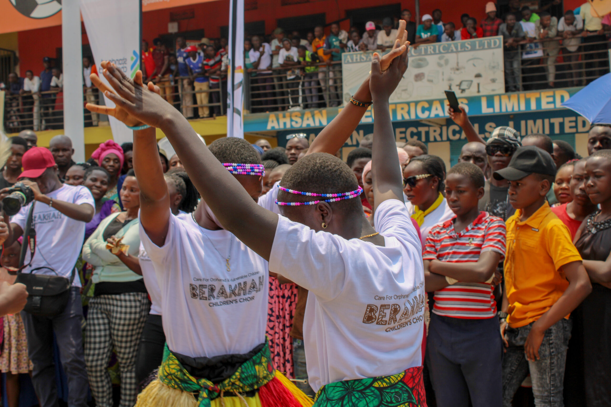

Equipping the next generation to live boldly for Christ
Reaching and discipling young people to become passionate followers of Christ.
Youth Ministries focuses on reaching and discipling the next generation of Christian leaders in Uganda. We recognize that young people face unique challenges including peer pressure, unemployment, poverty, and cultural pressures. Through dynamic youth programs, leadership training, sports outreach, and mentorship, we engage youth with the Gospel and equip them to become strong followers of Christ who will impact their communities and nation for God's Kingdom. The future of Uganda depends on today's youth walking with Christ.
Our youth ministry includes:

Help us reach and disciple the next generation